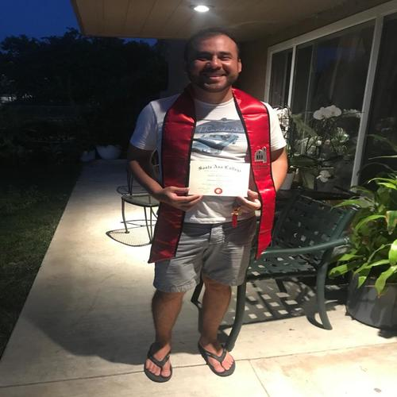

Alejandro Hernandez
My name is Alejandro Hernandez. I am a third-year undergraduate student at Univesisty of California Riverside. Currently, I am pursuing a Bachelors in Art in Sociology with a double minor in Psychology. I graduated from Tustin High School in June 2007 and I received my Associates Degree in Sociology and Psychology from Santa Ana College in June 2020. I plan on entering a Masters Degree program upon graduation from UCR and I am currently seeking an internship opportunity in a non-profit or government association where I can improve my skills in sociology.
My current work experience is in the Customer Service industry. I work at RED Digital Cinema from August 2018 to September 2020. My position was Product Support Specialist and was the fist point of contact for the clients who needed repairs on their cameras and accessories. I gain really good experience in the process of building high end cameras and working with cinematographers from all over the world and all kinds of fields, from Hollywood to National Geographic, to photographers. It was one of the best Jobs I had so far.
I also have experience in the Mortgage Industry. I worked at Loan Depot from July 2016 to July 2020 as a Customer Sales Representative and a Mortgage Loan Originator. I was licensed in 7 states to conduct business and the Job involved a high level of communication skills and knowledge of the mortgage industry and Federal and State laws and guidelines with regards to lending and Fair Credit Act. The Job gave me lots of experience and information regarding good lending practices, discipline and good selling techniques. I was a very demanding industry and required lots of energy and self-motivation to be able to be successful. Unfortunately, I feel ill due to Bels Palsy and the high stress I was felling so I decided to move on with my life and left the Job.
I am a driven person, I am also very focus and dedicated when I set my goals I make sure I pursue them and persevere even if takes longer than I expect. Unfortunately, I struggled with addiction for a couple of years but I was finally able to break free from it in November 2017 and that is when my whole life started changing for the better. Since I got sober I have been able to pay off most of my debt, I became and independent person and got my own apartment, a new car, a good job, my family loves me and is impressed by all the progress I have made so far and specially my parents are really proud of me for all the progress I have made.
At University of California Riverside I feel very welcome and I am very gratefull that I got an opportunity to attend this amazing school which offers so many opportunities and cares so much about their students and faculty. Since I started in October 2020 I have been learning so much about other cultures and been very active on the school programs and organizations even though is online. I do hope that we can get back to our new normal shortly and so I can attend live classes on campus and make new friends.
Experience
LOAN OFFICER
• Performing effective needs analysis and identifying sales strategies
• Building rapport and analyze customer needs and financial situation
• Ability to multitask, follow up, and persuade potential customers
• Cultivate relationships and the ability to close deals
SALES CONSULTANT
• Establish personal income goals that are consistent with dealership productivity and devise a strategy to meet those goals.
• Provide a five-star customer experience
• Follow up on all sales leads and set appointments with customers
• Build relationship with customer base on transparency and honesty
AUTO SALES SPECIALLIST
• Provide an exceptional experience to our customers
• Interviewing customers to determine needs and wants asking open ended questions
• Presenting vehicles to customers, test drive and search through inventory
• Use active listening to understand customer and overcome objections
• Run credit applications to approve customers, complete all required stipulations from the finance company, and close the sale
• Follow up with potential customers
Education
UC Riverside
Portfolio
